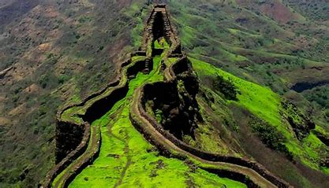

Torna Fort
Torna Fort, also known as Prachandagad, is a significant hill fort located near Pune in Maharashtra, India. It holds immense historical and strategic importance in the Maratha Empire's history under Chhatrapati Shivaji Maharaj. Here are some key details about Torna Fort:
History
- Built By: Torna Fort is believed to have been originally built by the Shaiva Panth, followers of the Shaiva sect, in the 13th century. It was later captured and fortified by Shivaji Maharaj in 1646.
- Significance: The fort played a crucial role in Shivaji Maharaj's conquests and served as a strategic outpost to control the region.
Architecture
- Design: Torna Fort is known for its steep slopes and strategically placed bastions and gates. It features several water tanks, temples, and other structures within its complex.
- Notable Structures: Key attractions include the Budhla Machi (a large plateau), the Menghai Goddess Temple, and the Bini Darwaza (main entrance gate).
Location
- Coordinates: 18.2783° N, 73.5413° E
- Elevation: Torna Fort is situated at an elevation of approximately 1,403 meters (4,603 feet) above sea level.
- Nearby Attractions: Nearby attractions include Rajgad Fort, Sinhagad Fort, and scenic spots in the Sahyadri mountain range.
Trekking
- Difficulty Level: The trek to Torna Fort is moderately difficult, suitable for trekkers with some experience due to steep sections and rocky terrain.
- Duration: The trek typically takes around 2-3 hours to reach the fort from the base village.
- Best Time to Visit: The best time to visit Torna Fort is during the post-monsoon months (September to November) when the weather is pleasant and the surroundings are lush green.
Points of Interest
- Panoramic Views: Enjoy breathtaking views of the Sahyadri mountain range and the Konkan plains from the fort's highest points.
- Historic Significance: Torna Fort witnessed significant battles and events during Shivaji Maharaj's reign, reflecting its historical importance in Maratha history.
Torna Fort stands as a testament to Maratha valor and strategic foresight, attracting history enthusiasts and trekkers alike to explore its rich heritage and natural beauty.